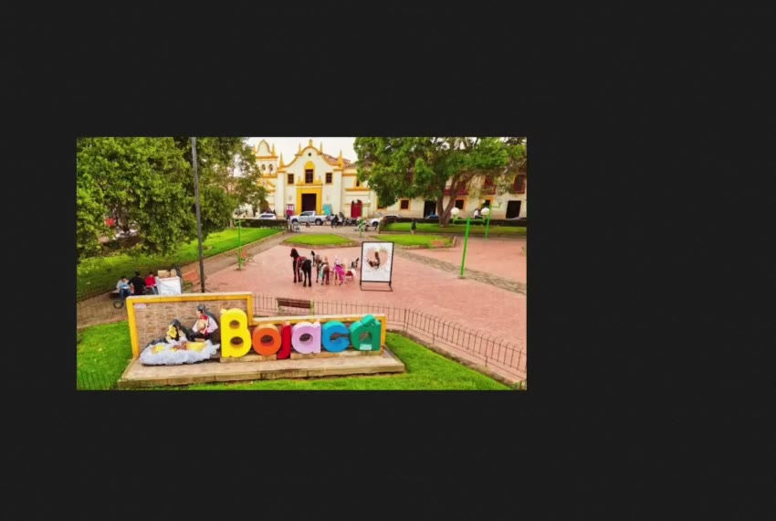
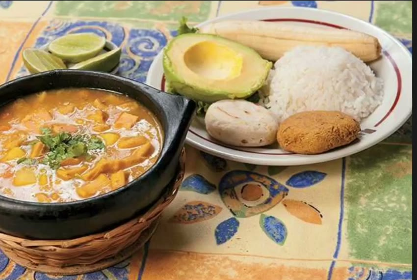
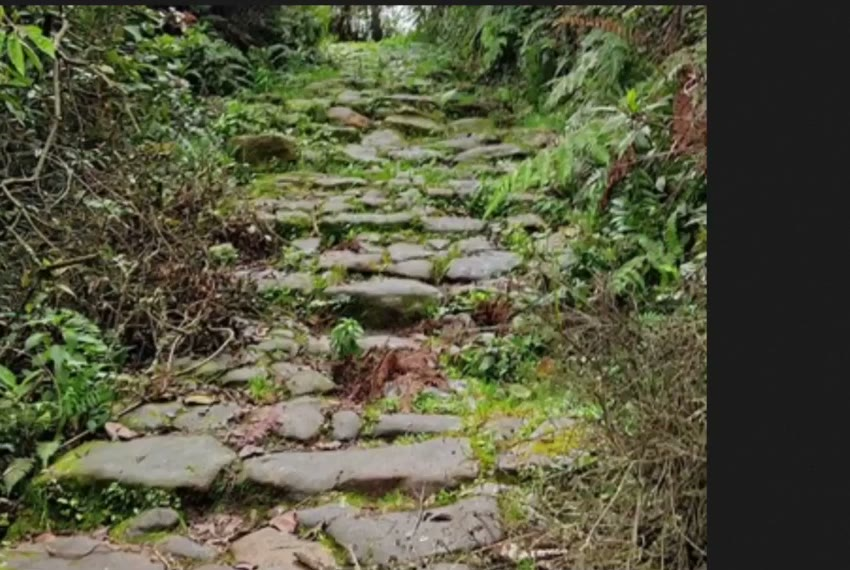

A PLACE WITH A STORY
Welcome to Bojacá
Bojacá is a municipality in the department of Cundinamarca, west of Bogotá, in Colombia’s Andean region. Its history reaches back to the Muisca people, whose communities lived across the high plateau before Spanish colonization. Today, local heritage is reflected in the town’s traditions and its changing landscape.
The Sanctuary of Our Lady of Health is an important place of Catholic devotion and pilgrimage. Visitors can also explore the town center, learn about local customs, and enjoy the countryside. Traditional Colombian food and regional dishes are part of the experience, while nearby hills and rural scenery offer a quieter view of the area.
Bojacá brings together religious traditions, local history, nature, and everyday community life. The video above is my own introduction to the place I call home.


